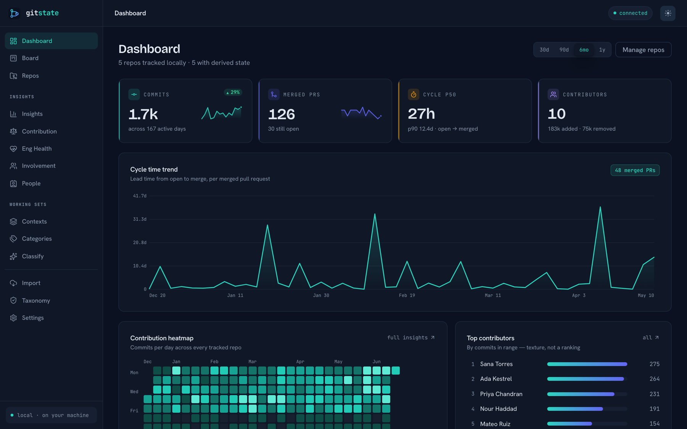
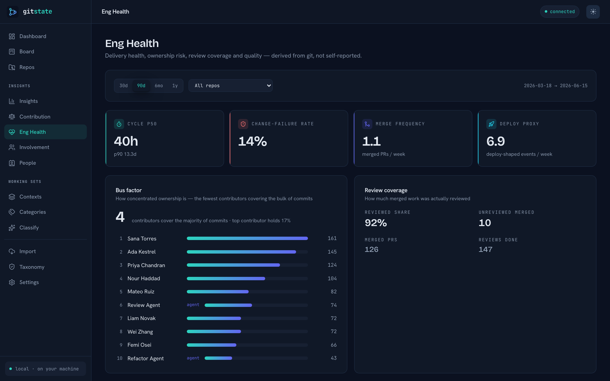
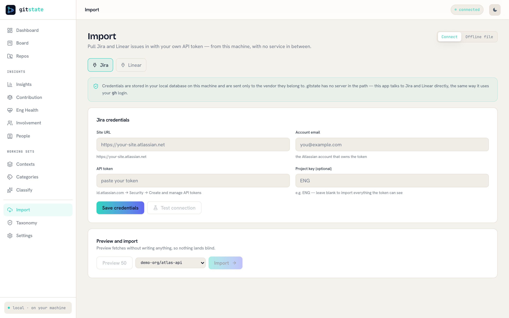

Your git already knows.
Stop typing it twice.
gitstate reads your repositories and derives project state, effort, contribution and classification — no tickets to groom, no story points to invent, no stand-up to reconstruct. It runs as a desktop app on your machine: a Rust core, one SQLite file, no account, no server.
Runs offline · scans a local repo with zero network calls · v0.1 — built in the open

The ticket was always a side effect of the commit.
Every tracker next to git — Jira, Linear, ClickUp, ZenHub — asks a human to re-type what the repository already recorded. That makes it wrong by construction: stale the moment attention moves, and gamed the moment it's a target. gitstate reads the other side.
+ 84 − 31 src/ingest/retry.rs
PR #47 merged · 2 reviews
The rule that constrains every feature: if it would force a human to invent a number, it doesn't ship. Where git genuinely can't see something — design work, a customer call, an outage handled in Slack — gitstate marks the gap instead of guessing at it.
Every screen, one source of truth.
Delivery health, contribution texture, classification and working sets — computed from commits, pull requests, issues and reviews. The desktop app and the headless daemon serve the same UI over the same JSON API.

A board nobody drags
Open, in progress, merged, done — every card is a PR, issue or review gitstate already parsed. It is read-only on purpose: a column you can drag is a column that can lie.
Agents counted honestly
Claude Code, Dependabot and friends are first-class identities. Every contribution
carries an agent_pct, so
autonomous work is visible rather than quietly folded into a human's row — in the demo
dataset the refactor agent's rows read 95% agent, and say so.


Any ranking is an artefact of the weights you chose.
So gitstate hands you the weights. Contribution is six normalised, git-grounded dimensions, computed within the repo cohort so reviewers, mentors and maintainers are never zeroed. Drag a slider and watch the "leaderboard" rearrange itself — that is the argument against having one.
Real numbers from the bundled synthetic dataset (gitstate seed --demo),
recomputed here exactly as the app does it: composite = weighted mean of the six dimensions.
Shipped counts merged PRs and closed issues · review counts
work done on others' changes · effort sums judged diff-difficulty ·
quality inverts reverts and SZZ-linked bug introductions ·
ownership is the area of the tree you hold · durability is
surviving lines ÷ authored lines, from git blame.
The whole app, captured against the demo dataset.
Nothing here is a mockup: each shot is the real desktop UI running against
gitstate seed --demo — a fake org
with pseudonymous contributors, never anyone's real history.
There is no server side to breach.
gitstate used to be a multi-tenant SaaS: a Postgres database holding every
team's git activity behind a login. That honeypot is gone. What replaced it is a Rust core, a
local daemon bound to 127.0.0.1,
and a single SQLite file you own.
No central anything
No hosted service, no org accounts, no billing cloud, no telemetry, no crash reporter. The daemon binds to loopback. Uninstalling is deleting a binary and a file.
Signed data, not a service
Peers agree on what feature.api
means because the category tree ships as an ed25519-signed, versioned, content-addressed
file — verified against a pinned key and failing closed to your local
categories if the signature doesn't check out.
Peer-to-peer, not pooled
Saved contexts and categories converge as CRDT operations — last-writer-wins scalars, add-wins sets, tombstoned deletes — merged machine to machine. Your commits, diffs and code never leave the box.
What is deliberately not built: cross-population features — trending, "others tagged this", "similar repos" — need a view of strangers you will never meet. They stay a dormant, optional seam, and there is no anti-sybil tier and no pooled fine-tuning to go with them. The rule: only "needs a view of strangers" would belong to a coordinator; everything a git tool is actually for is local and peer-to-peer.
The same core, without a window.
Every derivation the app shows is a command, and the daemon that backs the desktop shell is the same binary you can leave running on a server or a spare box. Real output, captured from the demo dataset.
$ gitstate repo add ~/code/atlas-api added 5d6fe96b-8686-9274-0165-97fbab4325e4 demo-org/atlas-api $ gitstate repo scan 5d6fe96b --no-forge # git only, no network scanned demo-org/atlas-api commits=2999 contributors=10 work_items=400 $ gitstate state 5d6fe96b repo 5d6fe96b-8686-9274-0165-97fbab4325e4 head d42d4868a7691cfdbfbfdb0f32664f85c5a066ad prs open=4 merged=40 draft=2 issues open=7 closed=21 flow in_progress=4 done=61 cycle time p50=8.0 p90=17.6 (hours) change fail 0.2 warning: synthetic demo data — not derived from real git/forge history
$ gitstate contributions 5d6fe96b contributor ship rev eff qual own dur comp agent% Ada Kestrel 67 43 69 55 77 93 67.3 0% Mateo Ruiz 32 47 54 79 72 66 58.3 0% Sana Torres 34 36 49 62 75 93 58.2 0% Femi Osei 19 85 91 56 12 36 49.8 0% $ gitstate taxonomy show schema gitstate.taxonomy/v1 version 1.0.0 id b52f6ed714c642c4a0fb3d536bee006bffe7c341… pubkey 3b6a27bcceb6a42d62a3a8d02a6f0d7365321577… categories: feature.api API / interface (feature) bugfix Bug fix refactor Refactor $ gitstate serve # same UI, no desktop shell gitstate serve: http://127.0.0.1:7473
One Cargo workspace. No Docker, no database server.
gitstate builds from source today — a Rust toolchain, plus Node for the desktop shell. Packaged installers land with the first tagged release.
# 1 — build the core, the CLI and the daemon git clone https://github.com/vul-os/gitstate cd gitstate cargo build --workspace # 2 — try it against synthetic data, no repo required cargo run -p gitstate-cli -- seed --demo cargo run -p gitstate-cli -- serve # http://127.0.0.1:7473 # 3 — or point it at something real gitstate repo add ~/code/my-project gitstate repo scan <repo_id> # --no-forge = offline gitstate state <repo_id> # 4 — the desktop app (boots the daemon in-process) cd apps/desktop && npm install && npm run tauri dev
- 1Bring your own forge login gitstate shells out to the
gh/glabyou're already logged into, or takes a token from the environment. It never asks you to create an account with anyone — including us. - 2Classification is opt-in Point
VULOS_LLMUX_URLorOPENAI_BASE_URLat any OpenAI-compatible endpoint — your own llmux, a local model, whatever you run. Leave it unset and a deterministic heuristic takes over; everything still works, offline. - 3P2P sync reaches nobody until you say so There is no discovery: a peer exists because you ran
gitstate sync peer addwith its URL and its public key, handed to you out of band. No directory, no default endpoint, no broker. With nothing enrolled, a node makes no outbound sync connection at all. - 4Know where your data is
gitstate data pathprints the directory and the database file. That file is the whole product state — back it up, move it, or delete it.
The questions worth asking.
How can it know the state without me updating anything?
Is the effort score just an LLM guessing?
llm_judged or heuristic), so you always
know which you're looking at. With no endpoint configured, the deterministic heuristic
runs instead and the labels say so.What about work that never touches git?
Does anything leave my machine?
Can a team use it together?
Is this finished?
What's the licence, and the catch?
ee/ tier were both removed
when the product stopped being a multi-tenant service. There is nothing to upsell you,
because there is nothing hosted to sell.Git is the real ledger.
Stop typing it twice — and keep it on your own machine.